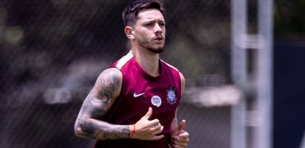

Corinthians
Rodrigo Garro avança na transição física e volta a treinar com bola no Corinthians
17/11/2026 às 00:39 (horário de Brasília)

O meio-campista argentino Rodrigo Garro avançou em seu processo de reabilitação e realizou atividades com bola junto ao elenco corintiano na manhã de segunda-feira (16), no CT Joaquim Grava. O atleta estava afastado desde o dia 4 de novembro, data em que sofreu uma contusão no joelho direito durante clássico contra o São Paulo.
Durante o treinamento, o camisa 10 participou de trocas de passes iniciais antes de seguir para trabalhos em separado no gramado. A comissão técnica avalia a evolução diária do jogador com a expectativa de que ele possa intensificar o ritmo e, caso responda bem, ser relacionado para o banco de reservas no duelo de quarta-feira contra o Botafogo.
Além de Garro, o departamento de futebol acompanha as situações de outros atletas contundidos. O volante Raniele já treina normalmente após cirurgia de menisco, o meia Jesse Lingard recuperou-se de fissuras na costela e o zagueiro Gabriel Paulista aproxima-se da liberação médica após problema muscular na coxa esquerda.